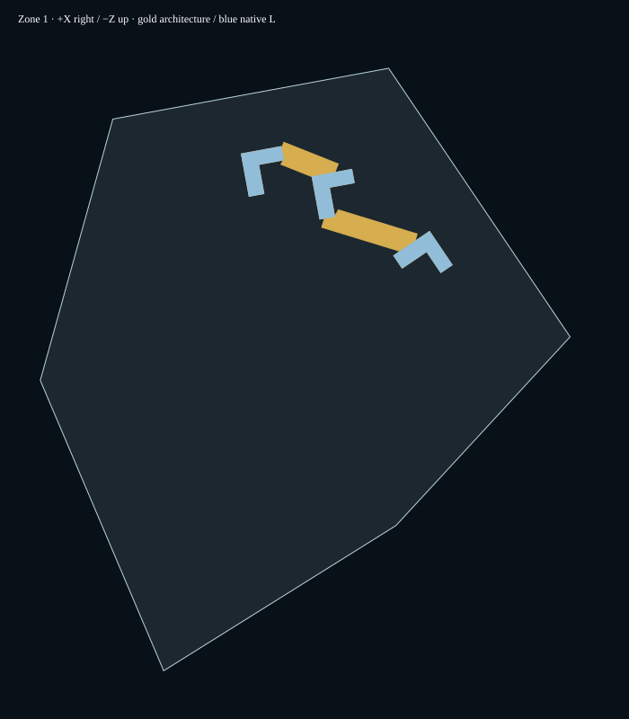

Three unchanged native L meshes. Experimental source-derived nodes, oblique connectors and irregular floor. Not a full-zone design or structural certification.
Exact A/B meshes, interfaces and provenance
{
"id": "2b728509f523d6ec8f7baa7238f7e1ad6c12030e356c686508474cbb1cd87235",
"validation": {
"deterministicReplay": true,
"ruleAUnchanged": true,
"nativeSourceBindingsVerified": 26,
"originalSnapshotUnchanged": true
},
"measurements": {
"zoneAreaFeet2": 3834.147941022576,
"buildingFootprintFeet2": 114.02630774578196,
"buildingCoveragePercent": 2.9739673455419897,
"floorAreaFeet2": 114.02630838735628,
"sourceLetterFootprintFeet2": 57.5472612349932,
"protectedRecessAreaFeet2": 21.704631988288597,
"exportedRecessOverlapFeet2": 0.0000021531098762239687,
"exportAreaToleranceFeet2": 0.00001,
"outsideAreaFeet2": 0,
"protectedOverlapFeet2": 0,
"solidComponents": 1,
"floorRegions": 1,
"heightFeet": 6
},
"connections": [
{
"id": "connection-0",
"contactAreas": [
0.18593749690065486,
0.1876175121100836
],
"angles": [
32.11703749034246,
57.88296258172485
]
},
{
"id": "connection-1",
"contactAreas": [
0.1927033562129452,
0.18593749972582962
],
"angles": [
62.55267480316899,
38.94421284419892
]
}
],
"limitations": [
"Small single-level connection prototype; not full Print-Contour architectural formation.",
"Upper rotation, running bond across multiple courses and terraces not implemented in this prototype.",
"3-ft floor ribbons are not a certified walkable route; source nodes may obstruct circulation.",
"Snapshot source alignment only; no live Site publication or browser storage mutation.",
"L-only demonstration; U/V placement and junctions not validated."
]
}